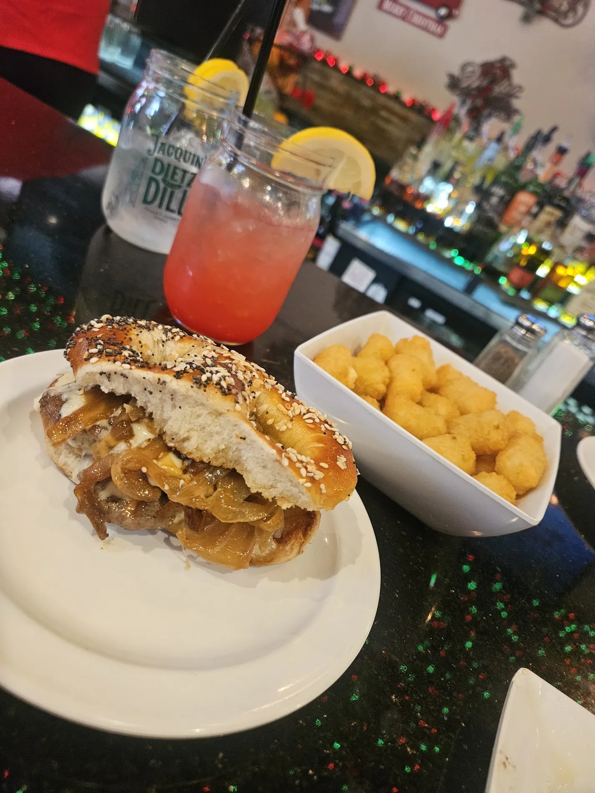
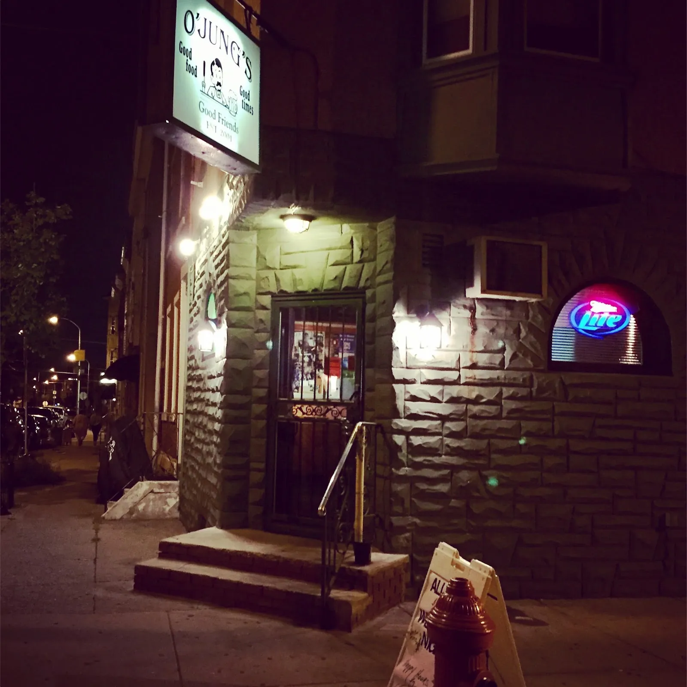
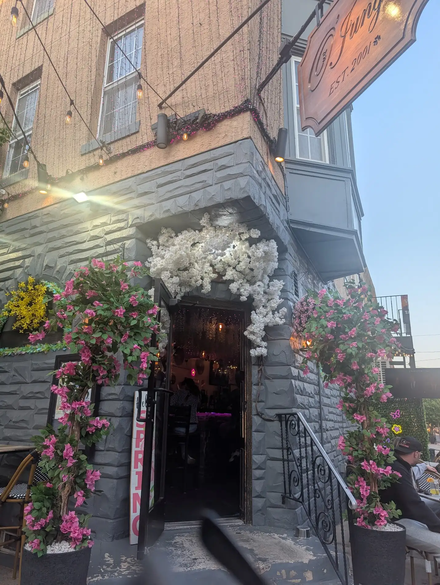

Roasted chicken wings.
Buffalo, BBQ chipotle, Cajun, sticky Asian or honey sriracha, with homemade blue cheese or ranch.
- Buffalo
- BBQ chipotle
- Cajun
- Honey sriracha
South 2nd Street, Philadelphia
Weekly specials alongside the regular menu, indoor and outdoor seating, takeout or delivery, live entertainment every weekend and every Philadelphia game on.



Buffalo, BBQ chipotle, Cajun, sticky Asian or honey sriracha, with homemade blue cheese or ranch.
Thursday: half price on chicken wings, fingers, the parm entrée or any chicken sandwich. Burger & a Beer Monday, Taco Tuesday, Wine Down Wednesday.
Est. 2001. Indoor and outdoor seating, takeout or delivery, live entertainment every weekend and every Philadelphia game on. Call 215-468-9697.
Dine-in only · 4pm to 8pm
Double patty burger with cheese and a domestic can or bottle.
Half-price tacos & quesadillas, plus house margarita and Corona deals.
House wine by the glass or bottle, and your choice of pasta & sauce with side salad and garlic bread.
Half price on chicken wings, fingers, the parm entrée or any chicken sandwich.
Specials change, so this week’s are always posted on Instagram and Facebook.
Happenings
Grab a team and a table. Pairs nicely with Wine Down Wednesday.
Live acts every weekend. Who’s playing is announced each week on @ojungs215.
Philly Favorites 2024 winner, The Philadelphia Inquirer, as shown on O’Jung’s own flyer. And every Philadelphia game is on the screens.
Food, drinks and the street
Photos: from O’Jung’s's public Google Maps listing, used for this private preview.
Finding us
About this preview. Built by GunaFix from O’Jung’s own website; the logo belongs to O’Jung’s. Prices are left out on purpose. Photos: from O’Jung’s's public Google Maps listing, used for this private preview.
From Google Maps
“If you’re reading this, just giddy up and head over. The food at this place absolutely slaps. Tried the gobbler and their vodka caesar wrap special this week, the gobbler was great, the vodka wrap was incredible. Friendly staff, & they accept cash and venmo”
“If I could give 100 stars I would. Me and my roommate have been looking forward to coming here for months. Every time a new post drops on instagram we immediately send it to each other. Sunday was the day we locked in on making the hike here (2 mile walk no big deal). We walked to O'Jungs and although the Eagles lost vibes were high. The inside is an awesome environment and atmosphere but we sat outside which was equally a great vibe. There was live music inside which we could hear while sitting outside which was great. We got the filet bao bun special and the French onion soup cheese dip. WOW , phenomenal. Then we split the vodka cutlet sandwich and dare I say one of the best cutlets I have ever had- fantastic. I can't stop thinking about that cutlet sandwich. Owning my own small restaurant, I know how hard it into keep up with new menu items and switches and it is beyond impressive what the staff is doing to keep these menu changes consistently rolling out. We will definitely be back and we will be back with a crowd.”
“Great local spot in South Philly with solid pub fare. The food hits the mark—especially the sandwiches—making it a dependable neighborhood tavern for a quick bite and casual drinks.”
“Started our annual Christmas bar crawl at O’Jungs. Really good corner bar on 2nd St. Really nicely decorated for Christmas. It’s really crowded so it’s not easy to find a seat. We got lucky. Grabed a table for four and sat. Waitress came up to us immediately to give us menus. But took a while for her to come back. I get it. It was crowded. We ordered couple drinks. The two drinks picture are the white Christmas Mojito and the cranberry basil sangria. Both drinks were very good. On the way to the bar, our Uber driver said the wings are really good so I ordered a spicy Thai wings. It was a good suggestion because they were very good. I would definitely recommend. We also got the pulled pork sandwich with provolone and broccoli rabe. It was tasty, but the roll could’ve been better ( come on we’re in Philly) and the broccoli rabe definitely too many stems. You couldn’t eat it. I had to pull it out of my sandwich. The one thing I wish I ordered was the pretzel sandwich sliders. They went past me a couple times and they look really good. I will definitely come back to the bar cause it’s a good vibe. Parking can be a problem that is why we Ubered”
Quoted verbatim from this restaurant's public Google Maps listing.